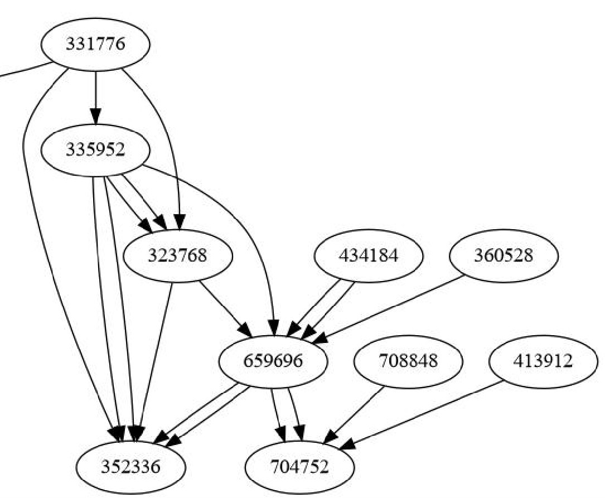

|  |
Grapher
@VERSION@ [@BUILD@]
|
Documentation
- JavaDoc
- Source
- https://github.com/hrivnac/Grapher.git (ready-to-run application in dist directory)
- Externals:
Java,
Log4J,
CLI Parser,
JGraphT,
JGraphX
- Tools:
Ant,
J2H,
Vizant,
UmlGraph,
UmlDoclet,
FindBugs,
SpotBugs,
CleanImports,
ApiViz,
JDepend
$ java -jar Grapher.exe.jar -h
usage: java -jar Grapher.exe.jar
-a,--alg apply algorithm (instead of just converting)
[sc = Strong Connectivity | cl = Clustering | ad =
adding distances]]
several algorithms can be separated by ;
algorithm arguments can be supplied after ,
-e,--noedge ignore input edges
-h,--help show help
-i,--in input file name [.graphml]
-o,--out output file name [.dot|.mat|.g6|csv|json|graphml]
-q,--quiet minimal direct feedback
-s,--show show in graphical window (instead of converting)
-v,--novertex ignore output edge-less vertices
Some examples:
# read input graphml file
# remove all existing edges
# apply algorithm:
# immersion = evaluate how string are vertices connected to other vertices
# attach the connectiveness as them as vertex attribute
# show 5 most and least connected vertices
# write result into graphml file
grapher -i x.graphml -e -a "add,immersion,5" -o y.graphml
# apply algorithms:
# add = add distance edges calculated as ra-dec spacial distance
# cl = find vertex clusters
# using KSpanningTree
# find 5 most important clusters
grapher -i x.graphml -e -a "add,radec;cl,KSpanningTree,5" -o y.graphml
Bugs
- JavaDoc creation doesn't work
Inconsistencies
ToDos
- 00.00.00:
- The CLI for graph conversions and simple visualisation.
- 01.00.00:
- 01.00.00x:
- Connectivity Algorithm.
- Immersion.
Related Documentation
 J.Hrivnac @BUILD@
J.Hrivnac @BUILD@